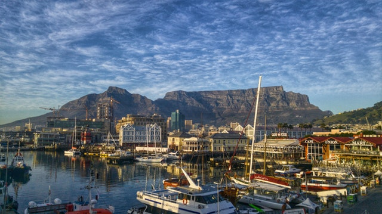

Maravillas del Mundo
Las 7 Maravillas del Mundo Natural
Debido a la gran acogida que tuvo la votación del año 2007 para la selección de las 7 maravillas del mundo moderno, se diseño una nueva encuesta gloval para escoger las mejores formaciones creadas por la naturaleza. En su fase inicial el proyecto tuvo más de 400 lugares nominados, los cuales fueron reducidos en varias fases por elección del público y grupos de expertos hasta que quedaron sólo 28 lugares. Estos últimos fueron sometidos a votación para elegir las 7 maravillas definitvas. El 11 de noviembre de 2011 se dieron a conocer los lugares que contarían con el reconocimiento.

Photo by Pixabay from Pexels
Montaña de la Mesa
Sudafrica, Africa
Photo by Rodolfo Clix from Pexels
Cataratas de Iguazú
Argentina - Brazil, América del Sur
Photo by Pedro Szekely from flickr
Amazonia
Bolivia - Brasil - Colombia - Ecuador - Guayana Francesa - Guyana - Peru - Surinam - Venezuela, América del Sur
Photo by Vincent Liew from Pexels
Bahía de Ha-Long
Vietnam, Asia
Photo by Republic of Korea from flickr
Isla Jeju
Corea del Sur, Asia
Photo by Mahir Dalloul from Pexels
Parque Nacional de Komodo
Indonesia, Asia
Photo by highlights.photo from flickr